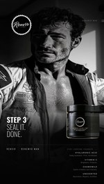
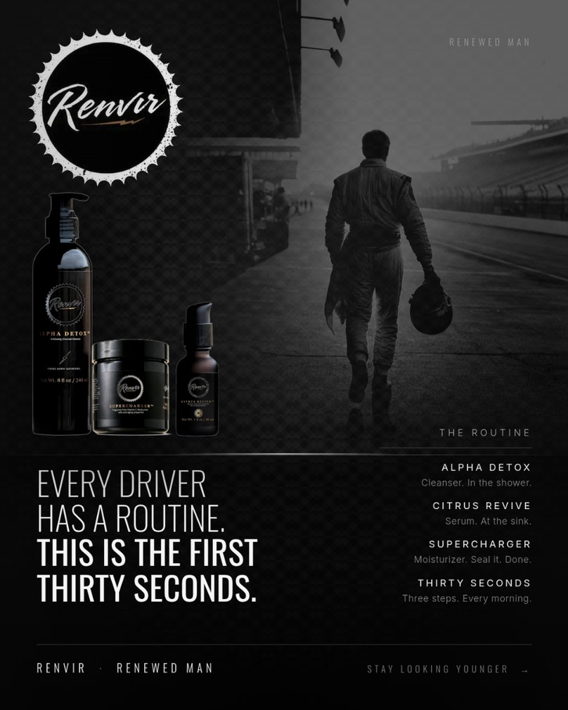
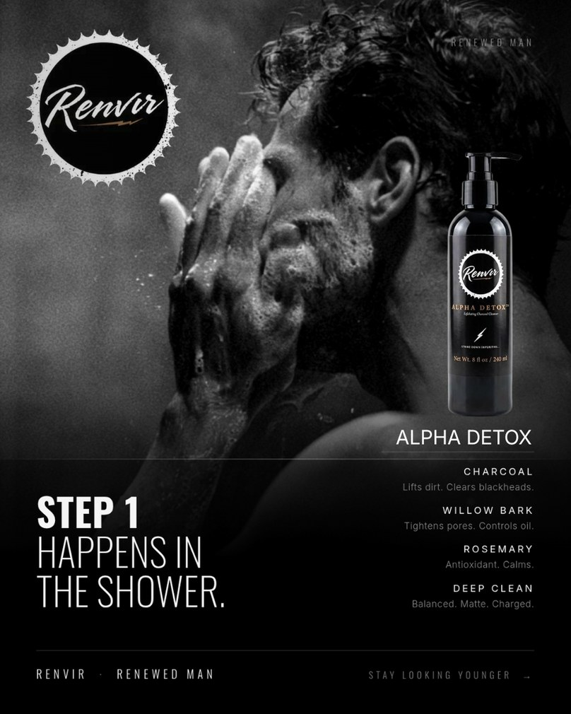
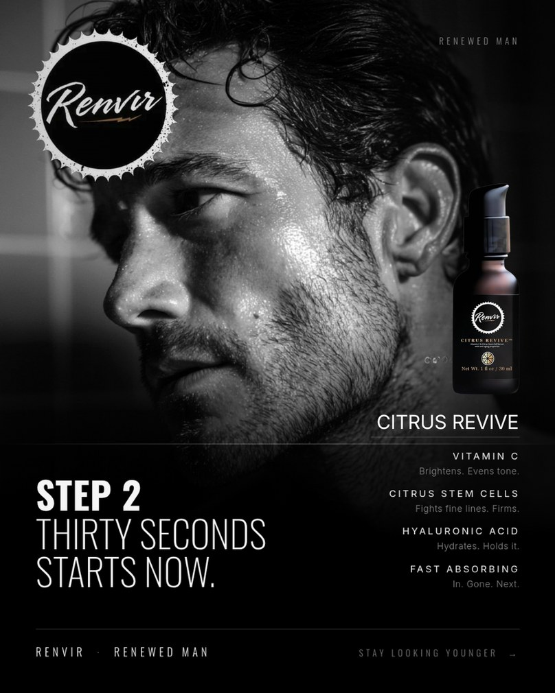
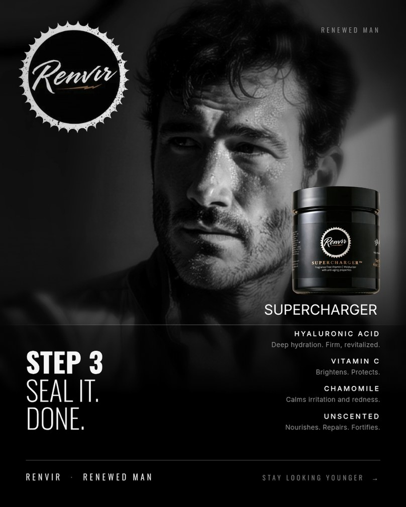
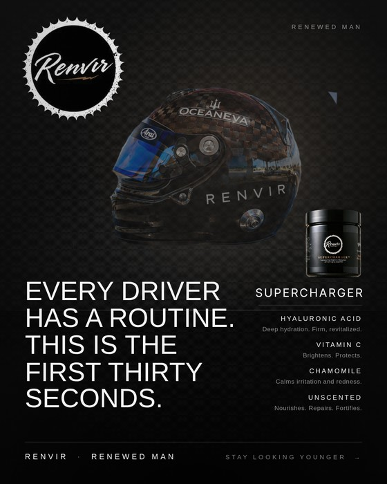

You told me what you needed on Saturday: content to post on Instagram and Facebook, and somebody who will come to you and say "this is a great ad," because you do not have the time to sit down and think.
This is that, plus the part underneath it.
I spent a night on the market, your competitors' live ads, and your own storefronts before I drew a single frame. Four things came out of it that change what we should make.
Every headline in men's skincare is about young men, and the usage numbers behind those headlines are real. But household income peaks at 55 to 64, men's own top skin concern is acne rather than wrinkles until much later, and the one brand genuinely built on this audience reports customers who are primarily 40 to 70. That brand is Caldera, the one you named as your reference.
So the target moves up and narrows: men 45 to 62, with a floor at 42. Not 35 to 55. And we cede 18 to 34 entirely, because it is the most contested, most expensive audience in the category and its concerns are not what your line solves.
One exception, and it is a media buy rather than a brand direction. Roughly three quarters of men in relationships are already using skincare somebody else bought for them. So $150 of the three month budget, one cell, goes to showing the existing men's creative to women 40 to 60. No new creative gets made for it and nothing about the brand moves. If it works we learn something cheap. If it does not it dies in a week and nothing ever knew it ran.
The counter-evidence is worth knowing too: Caldera reports 95% of their customers are men buying for themselves. That is exactly why this is one small cell and not a strategy. Renvir is skincare for men and stays that way.
I pulled every direct competitor's live ads from Meta's public library. Caldera is running roughly 170 ads and owns the aging claim almost alone. Everyone else is running acne, clean ingredients, or generic grooming. Nobody sits between $19.95 and $39.95 with an anti-aging claim aimed at a man in his fifties. Caldera proved the demand exists at premium prices. That is the opening, and it is more specific and more defensible than racing on its own.
Roughly 8 in 10 adults aged 30 to 64 use Facebook, and 30 to 49 year olds open it daily at a higher rate than any age group opens any other platform. Instagram is where the brand looks right; Facebook is where this particular man actually is. We run both from one place, and no ad gets built twice.
None of that is a content problem. The tag, the bio and the Facebook profile all get fixed in week one. The store apps are a later job, and a better one to do once there is traffic arriving for them to catch.
Before any of the rooms, him. Not a model, and not aspirational in the glossy sense. Somebody who has done things, built things, fixed things, and been somewhere at six in the morning because it mattered. A bit weathered. Comfortable in himself. The guy on the job site everybody actually likes.
That man never changes. Not his face, not his bearing, not the way he carries himself. He is the constant across everything we make, and he is the reason this holds together as one brand when the pictures are different.
This comes straight out of what you said on our first call: the cool guy with the fast cars and the fast boats, still middle class, and the greasers too, a little bit of everybody in every image. That is not five customers. That is one man, and the viewer sorts himself by recognising him rather than by matching a demographic.
A world is simply the room he is standing in. Same product, same man, same line. The only thing that moves is where he is.
The list is not fixed. Moto, the boat, the gym, wherever else he credibly turns up. What matters is that it is somewhere real, not a mood.
Which is what makes a world the right thing to test. Every world is the same man making the same promise in a different room, so when one outpulls the others we have learned something true about where this brand lives, and none of it is anybody's opinion.
The Track shown here is solely for composition purposes. This is not final creative.
What it is demonstrating is the system: the layout, the grade, the type hierarchy, where the mark and the footer sit, and how one world holds together across a Reel, a carousel, a static and a story. That part is settled and it is what I am asking you to react to.
What is not settled: the environments and the man are generated, and both get replaced by real footage the moment we shoot or the moment we are at Indy. Nothing here has been through your web team's new messaging. Treat every frame as a composition, not as an ad that is ready to run.
The one thing that is already real and stays real: the product photography. Every bottle you see is the actual photographed product, never generated, because the label is the one thing a generator gets wrong every time.
And this is a standing start, not a ceiling. I built all of it in a few days with no brand kit, no straight on product shots, no shoot, no access to your accounts and no direction from you. With real direction I can make these ads look very good. Tell me which worlds actually matter to you, hand me the logo kit and whatever the web team has landed on, get me one clean shot of each product, and the ceiling on this sits a long way above what is on this page. What you are looking at is the floor.
Press play. Again, a composition rather than a finished ad. Pit lane, shower, sink, close, and out on the roundel. One beat per product, in the order he uses them.
The routine reads as preparation, not skincare. A man about to strap into a car has a ritual, and this is part of it. That is the whole trick of this world, and it is why it can say "anti-aging" without ever using the word.

Not a rectangle on a page. This is the feed, on a phone, with the ad chrome around it, which is the only way anybody will ever see it. Swipe it. Use the arrows or the dots and walk all four cards the way a buyer would.




The carousel is where the sale actually gets made. Card one is the promise. Then one card per step in the order he uses them: shower, sink, seal.
It is the format a man in his fifties will genuinely read, it is the one people save and send to somebody, and it is the only place the routine gets explained instead of implied.
Three things this view makes obvious that a flat card never does. The next card peeks, which is what makes a thumb swipe. The bottom of the card competes with the CTA bar, which is why our footer sits where it does. And the caption truncates at about two lines, so the first sentence has to carry the whole point.

To be clear about something, because "check in" is the wrong word for it: we are in contact constantly. Not twice a quarter. That is just how this runs.
Twenty minutes a week is what I need from you, for approvals and answers. It is not how often you will hear from me.
The week one list gets done. Round one goes live: three worlds, seven days, judged on the first three seconds of a Reel where the numbers are genuinely solid. Round two follows immediately: the two winners, five variations each, two weeks. The feed starts posting on a real rhythm and the account stops looking abandoned.
You end the month knowing which world Renvir lives in, with data instead of opinions.
This is a real off ramp. If month one says I am not adding anything, I would rather you say it out loud than sit on it.
The winning worlds get made properly: more variations, better versions, the product photography working harder. Race week if the date lands, and everything shot at Indy costs nothing but attention. The feed gets its second month, which is when a grid stops looking like a start and starts looking like a brand.
Spend concentrates behind the winners. Everything that can be automated is: scheduling, publishing, reporting. And I write down how all of it runs, so it is not sitting in my head.
You end the quarter with a proven lane, a working feed, a library of assets you still own, and numbers you can make decisions with.
Email flows, review collection and the rest of the retention layer are not in these three months. They are real money and you are leaving them on the table, but they are worth building when there is traffic arriving for them to catch, and right now there is not. Get the top of the funnel working first. I can build that layer when it is worth building, and it is the obvious next conversation rather than something to buy on day one.
And what you own at the end of it: a ranked list of worlds decided by buyers rather than opinion, a design system that makes every future piece faster, a working measurement stack for the first time, and everything in your name with a written record of how it runs.
About thirteen hours a week, every week: roughly five making the content, two on stories, two and a half replying to every comment and message, three on the ad account, one on the numbers. A post is not a picture. It is deciding what it is for, building the image, dropping in the real product, laying out the type, writing the caption and the alt text, and scheduling it to both channels. A good one is 45 to 90 minutes.
About a third of the work never shows up as a post at all: building the replacement ad before the current one wears out, knowing what is safe to change on a live campaign, keeping four surfaces on one tagline, and watching what the category is doing. Automation takes month one from about eighty hours to about forty five by month three. It never goes to zero. What it buys is month three going to the things that need a person, instead of to posting.
Two lines. Everything else is inside them.
| Month 1 | Month 2 | Month 3 | Three months | |
|---|---|---|---|---|
| Ad spend, direct from your account | $1,200 | $1,300 | $1,600 | $4,100 |
| Fee, everything I make and run | $3,000 | $3,000 | $3,000 | $9,000 |
| Total | $4,200 | $4,300 | $4,600 | $13,100 |
Every dollar of the $4,100, scheduled. This is money Meta charges you directly. It never passes through me. Your card sits on your own Business account, Meta bills it, and I never invoice you for a dollar of media.
| What is running | Meta | Running | |
|---|---|---|---|
| Month one | find the lane | Meta | $1,200 |
| Wk 1 | Build week. Systems, channels and the feed start. Nothing live yet | $0 | $0 |
| Wk 2 | Round one live. Three worlds, seven days, $16.67 a day per world | $350 | $350 |
| Wk 3 | Read round one. Round two launches: two winners at $25 a day each, plus the $150 side cell | $425 | $775 |
| Wk 4 | Round two continues. Decision point one at the end of the week | $425 | $1,200 |
| Month two | build on what won | Meta | $1,300 |
| Wk 5 | Winners scale. New variations behind whatever won | $325 | $1,525 |
| Wk 6 | Scaling continues | $325 | $1,850 |
| Wk 7 | Race week if the Indy date lands. Paddock content into the feed | $325 | $2,175 |
| Wk 8 | Scaling continues. Decision point two at the end of the week | $325 | $2,500 |
| Month three | run it | Meta | $1,600 |
| Wk 9 | Spend concentrates behind the proven world. No more spreading | $400 | $2,900 |
| Wk 10 | Concentrated | $400 | $3,300 |
| Wk 11 | Concentrated | $400 | $3,700 |
| Wk 12 | Concentrated. Quarter closes and I hand over the written record | $400 | $4,100 |
| Three months | $4,100 |
The tracking has to be working before we buy a single impression, otherwise we are paying for traffic we cannot measure. Your Google tag is a placeholder today. Week one fixes that, and then we start. Everything else in week one is free to do and costs nothing to wait on.
Month one is deliberately cheap because it is buying an answer rather than orders. Once we know which world pulls, spending more stops being a gamble and starts being arithmetic. It goes from $1,200 in month one to $1,600 in month three, and by then it is pointed at proven creative.
Ad spend, and only ad spend. It is charged straight to your own Business account by Meta. I never invoice it, never mark it up, and never take a cut of media, because the moment I make money on your spend every recommendation I give you is worth less, and this whole thing depends on you trusting my recommendations.
$350 buys about 28,000 impressions, roughly 500 clicks, and maybe ten orders. Against a $25 order that is about $35 spent to make $25. It loses money on purpose. What it actually buys is the answer to which world pulls, and right now that is worth more than ten orders, because it decides what every piece of content, every ad and every photograph looks like for the next year.
I would rather tell you that now than have you read the report in three weeks and conclude advertising does not work. It works. It needs a bigger budget and a proven creative, and we get the proven creative first, cheaply.
Three functions, three vendors, three invoices. Ad spend excluded from both sides, so this is like for like.
| The function | Bought on its own | Month 1 | Months 2 and 3 |
|---|---|---|---|
| Social management: content, community, reporting | Small agency retainer | $2,500 | $2,500 |
| Paid media management | Flat fee, sub $5K spend | $1,000 | $1,000 |
| Ad creative production | 13 assets, or a creative retainer | $1,500 | $1,500 |
| Systems and tracking setup | One time project | $1,500 | $0 |
| Tools and software | Six subscriptions, on your card | $180 | $180 |
| Separately | $6,680 | $5,180 | |
| With me, everything included | $3,000 | $3,000 |
$17,040 bought separately. $9,000 with me. And that comparison assumes three vendors would each take a client this size, which most will not: at $1,600 a month of ad spend the standard percentage model pays an agency about $240, so the real alternative is a $2,500 minimum retainer or nobody at all.
But the saving is not really the rate. It is that one person makes the ad, buys the media, reads the number, and changes the ad, so the loop closes in hours instead of across three companies and several weeks.
What I would ask you to judge this on: not whether you like the pictures, though I hope you do. Whether it is a system. Whether in three months you will know things about your own business that you do not know today, and own assets you will still be using next summer.
Tear it apart on the call. I would rather you do that than nod and drift.
Amazon and TikTok are your operator's lanes. Nothing in this section is included in my scope, my fee, or the ad spend above. Every number in section 06 is Meta only.
I am putting this at the end because I found it while working on the creative and it would be strange not to tell you. Use it, hand it to him, or ignore it entirely.
At current category click costs and your own conversion rate, an Amazon ad works out at roughly $12 per order. What that costs you depends entirely on which page the click lands on.
| Where the spend points | Orders | Revenue | ACOS |
|---|---|---|---|
| A bundle at about $50 | 33 | $1,650 | 24%, works |
| A single SKU at $23.99 | 33 | $800 | 50%, loses money |
Same clicks, same conversion rate, same spend. The only difference is the destination. Your listings already convert at 11 to 14%, which is at the top of the category, so the machine works. It just has to be pointed at the right page.
Your serum is $23.99 on Amazon and $27.95 on your own site. Supercharger is $18.99 there and $24.95 here. Anyone who comparison shops is being trained to buy on the channel that costs you more and tells you less, because Amazon keeps the customer's email and takes its cut. Worth a conversation, not necessarily a change.
Your site has a Meta pixel and no TikTok pixel. That means if your operator's affiliate program sends anybody to renvirco.com, nothing on the site can see it and nobody can prove the program worked. The creators get paid on TikTok Shop sales, so the commissions are safe either way, but any traffic they push to your own store is currently invisible.
I am not running TikTok and I am not asking to. But I will be in the site code installing GA4 in week one regardless, and adding his pixel while I am in there takes about two minutes. If he wants it, it is free and it is done. If he would rather install it himself, that is completely fine and I will stay out of it.
All of this is his call, not mine. If he is already on it, ignore me. If he is not, these are the cheapest improvements available to you this month and none of them costs a dollar of new spend.